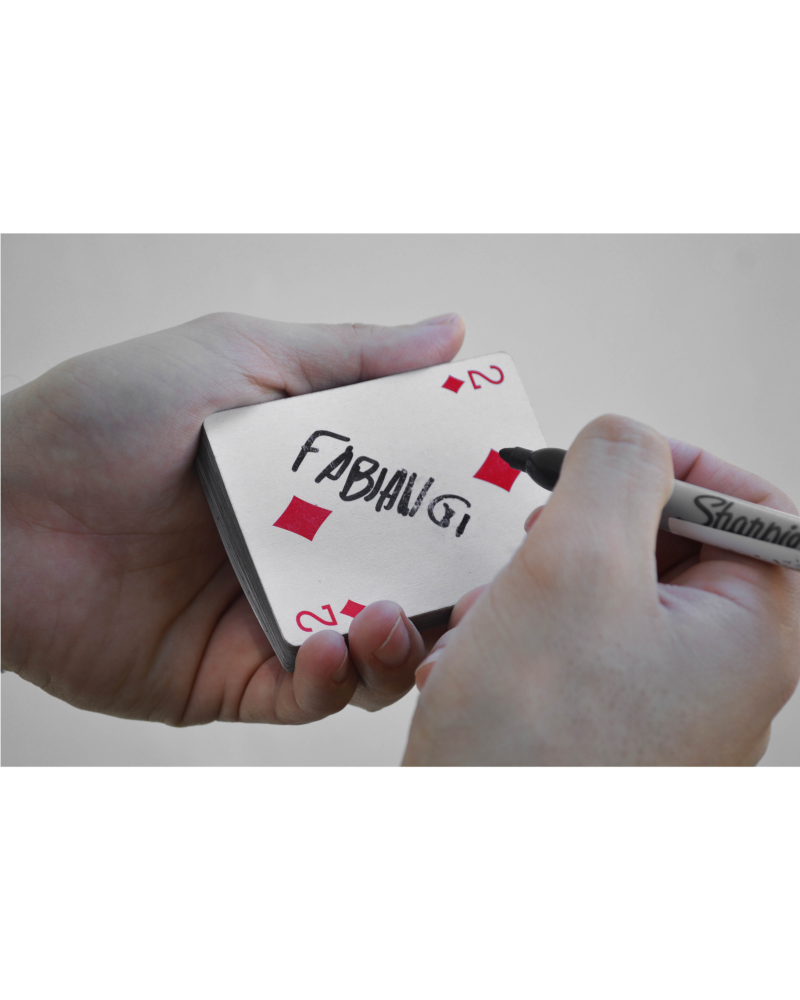

Para niños
Para niñosShow de magia infantil
Magia visual, muy interactiva y llena de risas. Los niños participan y son los protagonistas.
40 minutos4 a 12 años
Cotizar show infantil

Mago e ilusionista · Chaco, Corrientes y norte de Santa Fe
Cumpleaños infantiles, casamientos, 15 años y eventos de empresa. Pedí tu presupuesto online en unos minutos.
Tres propuestas con un mismo objetivo: que todos se rían y se asombren.
Para niñosMagia visual, muy interactiva y llena de risas. Los niños participan y son los protagonistas.
 Adultos y empresas
Adultos y empresasUn show visual con humor, chispa y complicidad con el público. Ideal para cumpleaños, casamientos, 15 años y eventos de empresa.
 Mesa por mesa
Mesa por mesaMini show de bienvenida en cada mesa o grupo. La magia ocurre a centímetros de los ojos de tus invitados.
Tres pasos para tener tu fecha asegurada.
Completá un formulario corto: tipo de evento, fecha y lugar.
Al terminar ves el presupuesto en pantalla y lo podés descargar.
Escribime por WhatsApp, confirmo la disponibilidad y se reserva con una seña.
Trabajo en Chaco, Corrientes y norte de Santa Fe, con base en Resistencia.
El show infantil dura 40 minutos, el show de salón 45 minutos y la magia de cerca 1 hora y media recorriendo el evento.
Para las localidades que figuran en el formulario, sí: el presupuesto ya incluye viáticos y traslado. Si tu evento es en otra localidad, calculo el traslado según la distancia y te envío el presupuesto por WhatsApp.
Completás el formulario, ves tu presupuesto y me escribís por WhatsApp. Yo confirmo la disponibilidad y la fecha queda reservada con una seña.
En peloteros, salones de fiestas, quinchos, casas, restaurantes y en cualquier lugar donde haya una celebración.
Sí. Tengo shows pensados para niños (de 4 a 7 y de 8 a 12 años) y para adultos, con el humor y el estilo de cada público.
Quién soy
Soy Fabián Gómez y hace más de diez años combino magia y humor en shows para niños y adultos. Adapto cada show al público y al lugar: peloteros, salones, quinchos y donde haya una celebración.
Me presenté en escenarios del Chaco, Corrientes y Santa Fe, siempre con una propuesta atractiva e innovadora para cada ocasión.
Pedí tu presupuesto en unos minutos o escribime y lo vemos juntos.